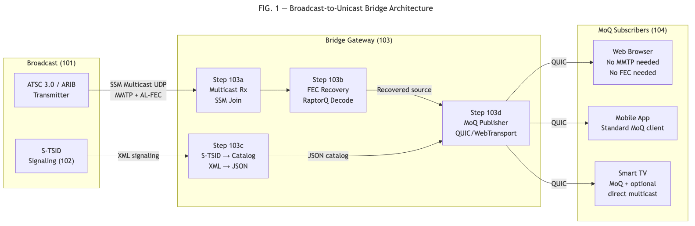
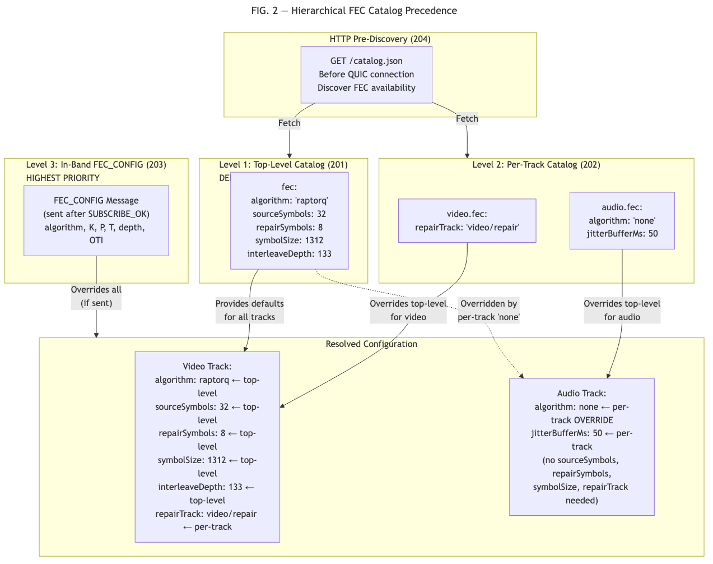
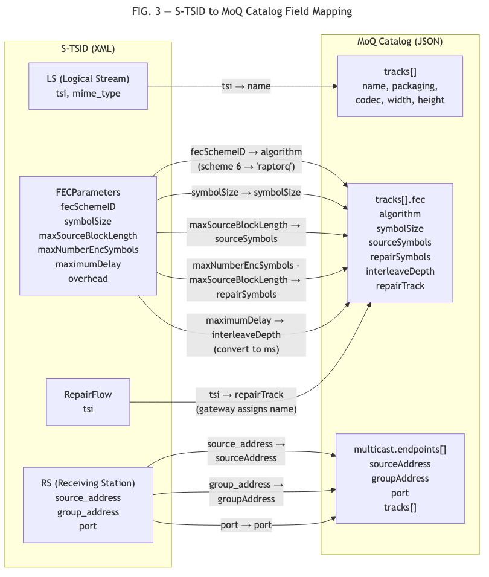
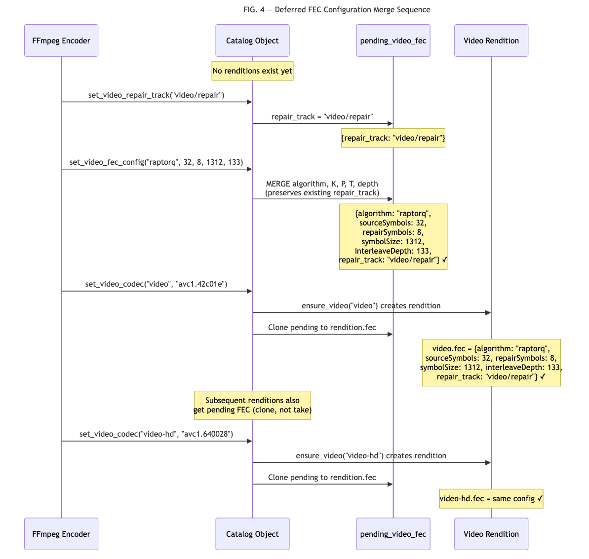

Omar Ramadan
Blockcast, Inc.
To be assigned upon USPTO submission (package finalized July 2026)
The present invention relates to media delivery systems that bridge broadcast television infrastructure to unicast streaming protocols, and to methods for signaling forward error correction parameters in media streaming catalogs with hierarchical configuration.
ATSC 3.0 (Advanced Television Systems Committee) is the next-generation broadcast television standard used in the Americas and South Korea. ARIB STD-B60 is the equivalent standard used in Japan. Both standards use MPEG Media Transport Protocol (MMTP, ISO 23008-1) for media delivery over broadcast networks.
Broadcast media is transmitted via Source-Specific Multicast (SSM) using MMTP packets that carry application-layer FEC metadata, including Source FEC Payload IDs for source symbols and Repair FEC Payload IDs for repair symbols. FEC parameters are signaled via the S-TSID (Service-based Transport Session Instance Description), an XML document containing FECParameters elements with RaptorQ OTI (Object Transmission Information), symbol sizes, and block configurations.
Media over QUIC (MoQ) is an emerging IETF protocol for real-time media delivery using a publish/subscribe model over QUIC and WebTransport. MoQ uses JSON-based catalogs to describe available media tracks, codecs, and configurations. Subscribers fetch catalogs to discover available content before establishing subscriptions.
Existing FEC signaling methods include:
SDP (RFC 6364): Session Description Protocol attributes for FEC Framework configuration. Requires SIP or RTSP session establishment. Per-flow configuration without hierarchical defaults.
ATSC S-TSID (A/331): XML-based signaling with per-RepairFlow FEC parameters. Not hierarchical. Not accessible via HTTP.
DASH MPD: Has hierarchical structure (Period, AdaptationSet, Representation) with property inheritance, but defines NO FEC-specific properties.
MoQ Catalog (I-D.ietf-moq-catalogformat): JSON-based catalog for MoQ track discovery. Contains ZERO provisions for FEC parameter signaling.
No broadcast-to-MoQ bridge exists. ATSC 3.0 gateways (e.g., ADTH, HDHomeRun) convert broadcast to local network streaming but do not output MoQ tracks, do not preserve FEC parameters, and do not convert S-TSID to MoQ catalog format.
No S-TSID to MoQ catalog conversion. S-TSID (XML) and MoQ catalog (JSON) are structurally different. No standard or known system defines a bidirectional conversion between them.
No hierarchical FEC catalog. FEC parameters in streaming manifests are either session-level (SDP), per-flow (S-TSID), or absent (DASH, MoQ). No system provides top-level FEC defaults with per-track overrides in a hierarchically structured catalog.
No pre-subscription FEC discovery. In SDP-based systems, FEC parameters are exchanged during session negotiation. Subscribers cannot discover FEC availability before committing to a session.
The present invention provides two interrelated systems:
An end-to-end broadcast-to-unicast bridge that receives broadcast media via SSM multicast, performs FEC recovery, converts broadcast signaling (S-TSID) to streaming catalog (MoQ JSON), and re-publishes media as MoQ tracks — enabling subscribers without broadcast receiver hardware, MMTP decoders, or FEC processing capability to consume broadcast content.
A hierarchical FEC catalog signaling method where FEC parameters are specified at top-level (defaults) and per-track (overrides) in a JSON catalog, discoverable via HTTP before subscription, with in-band control message override and support for per-track algorithm selection including a “none” mode with jitter buffering.
FIG. 1 illustrates the broadcast-to-unicast bridge architecture.
Component 101 - Broadcast Transmitter: An ATSC 3.0 or ARIB STD-B60 broadcast transmitter emitting MMTP packets via SSM multicast. The transmitter generates AL-FEC repair symbols using RaptorQ (RFC 6330) and transmits both source and repair MMTP packets on the multicast group.
Component 102 - S-TSID Signaling: The broadcast system distributes S-TSID signaling containing: - Logical Stream (LS) elements describing media tracks - FECParameters elements with: fecSchemeID, symbolSize, maxSourceBlockLength (K), maxNumberEncSymbols (K+P) - RepairFlow elements mapping repair data to source streams - RS (Receiving Station) elements with multicast group addresses
Component 103 - Bridge Gateway: The bridge gateway performs:
Step 103a - Multicast Reception: The gateway joins the SSM multicast group and receives MMTP packets (both source and repair).
Step 103b - FEC Recovery: The gateway performs RaptorQ or Reed-Solomon FEC decoding on received blocks. For blocks where all K source symbols arrived cleanly, no decoding is necessary. For blocks with missing source symbols, the gateway uses available repair symbols to recover the missing data.
Step 103c - S-TSID to Catalog Conversion: The gateway converts broadcast signaling to a MoQ JSON catalog using the following field mapping:
| S-TSID Field | MoQ Catalog Field |
|---|---|
| LS (Logical Stream) | tracks[] entry |
| LS.tsi (Transport Session ID) | tracks[].name |
| FECParameters.fecSchemeID | tracks[].fec.algorithm (scheme 6 -> “raptorq”) |
| FECParameters.symbolSize | tracks[].fec.symbolSize |
| FECParameters.maxSourceBlockLength | tracks[].fec.sourceSymbols |
| FECParameters.maxNumberEncSymbols - maxSourceBlockLength | tracks[].fec.repairSymbols |
| RepairFlow.tsi | tracks[].fec.repairTrack (gateway assigns track
name) |
| FECParameters.maximumDelay | tracks[].fec.interleaveDepth (converted to ms) |
| RS.source_address | multicast.endpoints[].sourceAddress |
| RS.group_address | multicast.endpoints[].groupAddress |
| RS.port | multicast.endpoints[].port |
The reverse conversion (MoQ catalog to S-TSID) uses the inverse mapping, enabling MoQ-originated content to be retransmitted via broadcast infrastructure.
Step 103d - MoQ Publication: The gateway publishes FEC-recovered source media as MoQ tracks over QUIC/WebTransport. Each MMTP source track becomes a MoQ track. The gateway may optionally: - Re-publish both source and repair tracks (for subscribers wanting FEC protection on the unicast path) - Re-package MMTP media into CMAF (fMP4) segments for compatibility with HLS/DASH clients - Strip MMTP headers and deliver raw codec bitstream
Component 104 - MoQ Subscribers: Subscribers receive media via standard MoQ subscription without requiring MMTP decoders, FEC processing, or broadcast receiver hardware. They interact with the bridge gateway as they would with any MoQ publisher.
Step 103e - Bidirectional Operation: The reverse path enables MoQ publishers to reach broadcast infrastructure: 1. MoQ subscriber sends media to the bridge gateway 2. Gateway converts MoQ catalog to S-TSID 3. Gateway packages media as MMTP packets with AL-FEC 4. Gateway transmits via SSM multicast
FIG. 2 illustrates the hierarchical FEC catalog structure and precedence model.
Level 1 - Top-Level Defaults (201): The catalog JSON
document contains a top-level fec object specifying default
FEC parameters:
{
"fec": {
"algorithm": "raptorq",
"sourceSymbols": 32,
"repairSymbols": 8,
"symbolSize": 1312,
"interleaveDepth": 133
},
"tracks": [ ... ]
}These defaults apply to all tracks that do not specify their own FEC configuration.
Level 2 - Per-Track Overrides (202): Individual tracks may override specific fields from the top-level defaults:
{
"tracks": [
{
"name": "video",
"fec": {
"repairTrack": "video/repair"
}
},
{
"name": "audio",
"fec": {
"algorithm": "none",
"jitterBufferMs": 50
}
}
]
}The video track inherits all top-level FEC parameters and adds its repair track name. The audio track overrides the algorithm to “none” with a jitter buffer, indicating no FEC encoding is applied and the receiver should use a 50ms reorder buffer.
Level 3 - In-Band Override (203): After subscription establishment, an in-band FEC_CONFIG control message may be sent from publisher to subscriber. This message carries authoritative FEC parameters that override both per-track and top-level catalog values.
Precedence Order: FEC_CONFIG message > per-track catalog > top-level catalog defaults
Step 204 - HTTP Pre-Discovery: The catalog is fetchable via HTTP (e.g., GET /catalog.json) before establishing a MoQ session. This enables subscribers to: - Discover whether FEC is available for a track - Determine the FEC algorithm and parameters - Decide whether to subscribe to repair tracks - Estimate bandwidth overhead (repairSymbols / sourceSymbols)
All before committing to a QUIC connection or subscription.
Step 205 - “None” Algorithm: The algorithm value
“none” (registry value 0x00) indicates no FEC encoding. When present,
source data is delivered without repair symbols. The optional
jitterBufferMs field specifies a receiver-side reorder
buffer in milliseconds, providing tolerance for out-of-order packet
delivery without FEC overhead.
Use cases for “none”: - Audio tracks where codec-level Packet Loss Concealment (PLC) adequately handles gaps - Ultra-low-latency (ULL) applications where any FEC latency is unacceptable (e.g., financial data feeds) - Reliable QUIC stream delivery where retransmission is sufficient
Step 206 - Per-Track Algorithm Selection: Different media types within the same session can use different FEC algorithms:
| Media Type | Recommended Algorithm | Rationale |
|---|---|---|
| Video | raptorq | Large keyframes expensive to lose |
| Audio | none | Small frames, PLC handles gaps |
| Subtitles | none | Reliable QUIC sufficient |
This minimizes total FEC overhead by applying protection only where recovery provides significant benefit.
Step 207 - Deferred Configuration Merging: In
implementation, FEC parameters may be set before track renditions exist
in the catalog (e.g., when the encoder signals FEC configuration before
the first media frame). The system maintains a pending FEC configuration
that is merged incrementally: 1.
set_repair_track("video/repair") sets repair_track in
pending 2. set_fec_config("raptorq", 32, 8, 1312, 133)
merges algorithm, K, P, T, depth into pending WITHOUT overwriting
repair_track 3. When a track rendition is created, the pending
configuration is cloned to the rendition
This ordering-independent merge ensures that parameters set by different system components at different times are correctly combined.
A system for bridging broadcast media to unicast streaming, comprising:
a broadcast gateway receiving media packets with application-layer forward error correction via source-specific multicast from a broadcast transmitter;
said gateway performing FEC decoding on received packets to recover media lost during broadcast transmission;
said gateway converting broadcast signaling from a first format to a streaming catalog in a second format, wherein said conversion maps:
said gateway publishing recovered source media as tracks in a publish/subscribe session over a reliable transport protocol;
one or more subscribers receiving said tracks without requiring capability to decode said media packets in their original format, without requiring FEC processing, and without requiring broadcast receiver hardware.
The system of Claim 1, wherein said first format is S-TSID XML conforming to ATSC A/331 and said second format is JSON conforming to a MoQ catalog format.
The system of Claim 1, further comprising the reverse conversion from said second format to said first format, enabling content originated in the publish/subscribe system to be retransmitted via broadcast infrastructure.
The system of Claim 1, wherein said gateway re-packages recovered media from a first container format to a second container format, producing segments compatible with HTTP adaptive streaming protocols.
The system of Claim 1, wherein said gateway selectively publishes both source and repair tracks for subscribers that request FEC protection, while publishing source-only tracks for subscribers that do not.
The system of Claim 1, wherein said gateway is deployed at an ISP edge router with inline multicast tunneling capability, forming a hierarchical distribution node that receives broadcast via tunnel and re-publishes to local subscribers.
A method for forward error correction parameter signaling in a media streaming system, comprising:
providing a catalog document containing:
making said catalog document available via HTTP prior to establishment of a streaming session, enabling subscribers to discover FEC parameters before subscription;
after subscription establishment, optionally sending an in-band control message carrying authoritative FEC parameters;
applying a precedence order wherein said in-band control message overrides per-track catalog values, which override top-level catalog defaults.
The method of Claim 7, wherein said algorithm identifier includes a “none” value indicating no FEC encoding, and said per-track FEC configuration object for a track with algorithm “none” includes a jitterBufferMs field specifying a receiver-side reorder buffer in milliseconds.
The method of Claim 7, wherein different tracks within the same catalog specify different algorithm identifiers, enabling per-media-type FEC selection within a single streaming session.
The method of Claim 7, further comprising maintaining a deferred FEC configuration that is merged incrementally as track renditions are created, wherein parameters set by separate configuration operations at different times are combined without overwriting previously set fields.
The method of Claim 7, wherein said interleave depth is expressed in milliseconds, decoupling the FEC block span from media frame rate and enabling the same catalog value to apply to media types with different frame rates.
The method of Claim 7, wherein for multicast delivery where no back-channel exists for said in-band control message, said catalog FEC parameters serve as the sole authoritative configuration source.
A system and method for bridging broadcast television (ATSC 3.0, ARIB STD-B60) to unicast streaming (MoQ/WebTransport) with forward error correction preservation. A gateway receives MMTP broadcast media via SSM multicast, performs FEC recovery, converts broadcast signaling (S-TSID XML) to a streaming catalog (MoQ JSON) with algorithmic field mapping, and re-publishes recovered media as publish/subscribe tracks. Subscribers consume content without requiring broadcast hardware, MMTP decoders, or FEC capability. A hierarchical FEC catalog signaling method provides top-level defaults with per-track overrides in a JSON catalog, HTTP-accessible before subscription, with in-band control message override. Per-track algorithm selection supports mixed FEC schemes (e.g., video=raptorq, audio=none) and a “none” mode with receiver-side jitter buffering.
FIG. 1: Broadcast-to-unicast bridge architecture showing broadcast transmitter, SSM multicast path, bridge gateway (with FEC recovery, S-TSID conversion, MoQ publication), and MoQ subscribers.

FIG. 2: Hierarchical FEC catalog structure showing three precedence levels (top-level defaults, per-track overrides, in-band FEC_CONFIG message) with inheritance arrows and override semantics.

FIG. 3: S-TSID to MoQ catalog conversion field mapping diagram showing XML elements mapped to JSON fields.

FIG. 4: Deferred FEC configuration merge sequence showing three configuration calls and their cumulative effect on pending and rendition FEC state.
